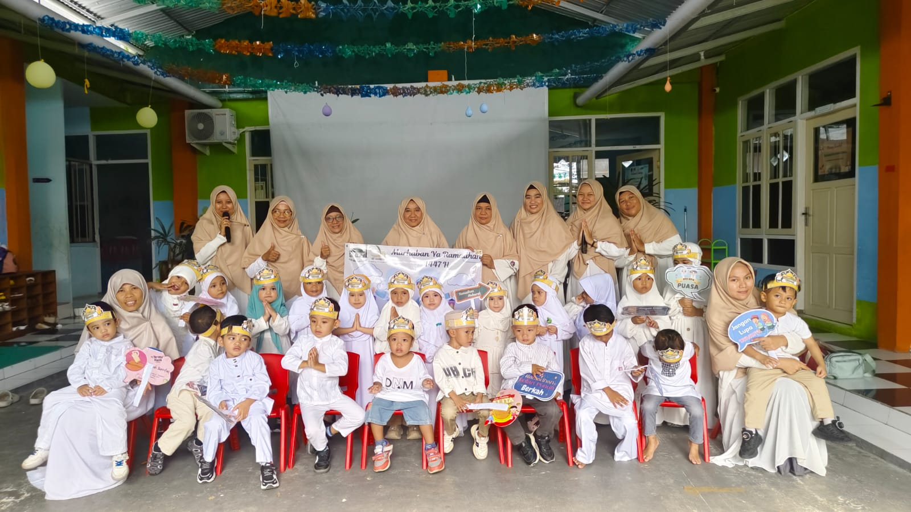
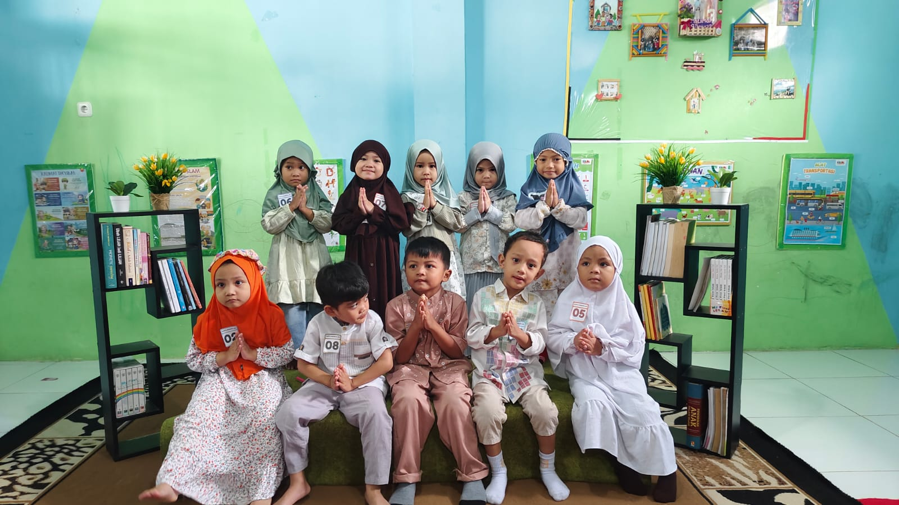
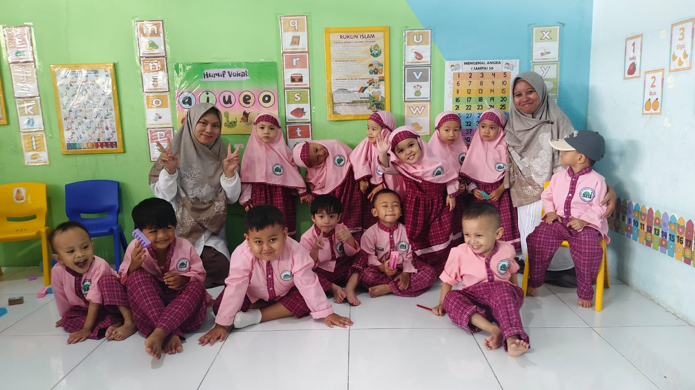
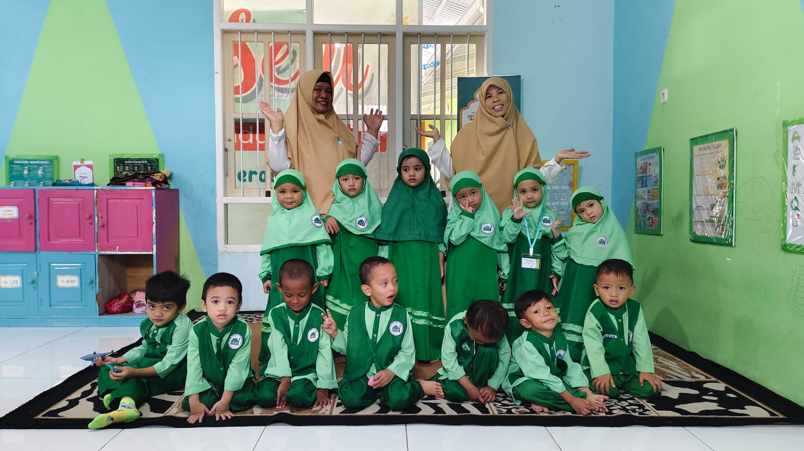

بِسْمِ اللَّهِ الرَّحْمَنِ الرَّحِيم
Assalamu 'Alaikum Warahmatullahi Wabarakatuh
PAUD IT AL ISLAH GORONTALO
Alhamdulillah puji syukur kepada Allah SWT yang telah melimpahkan Rahmat-Nya kepada kita semua. Shalawat beserta salam kita haturkan kepada junjungan kita Nabi besar Muhammad ﷺ kepada keluarga, sahabat dan Insya Allah sampai kepada kita yang tetap istiqomah dengan ajaran-ajaran beliau. Aamiin
Dalam rangka puncak Projek Penguatan Profil Pelajar Pancasila kegiatan "PENTAS SENI (PENSI)" dengan tema "Cintai Negeriku, Bangkit Generasi Qur'ani", Maka dengan ini kami mengundang Bapak/Ibu/Sdr(i) untuk menghadiri acara tersebut, yang Insya Allah akan dilaksanakan pada :
Sub-Tema 1
Cintai Qur'an Sejak Dini
Sub-Tema 2
Cita-Cita ku sebagai Amal menuju Surga
Pelaksanaan Acara
Hari / Tanggal
Rabu, 20 Juni 2026
Waktu / Jam
07.00 WITA - Selesai
Lokasi / Tempat
Aula Serbaguna SKB Andalas
Menghitung Mundur Acara
Galeri




"Ya Tuhan kami, anugerahkanlah kepada kami istri-istri kami dan keturunan kami sebagai penyenang hati (kami), dan jadikanlah kami imam bagi orang-orang yang bertakwa."
(QS. Al-Furqan: 74)
Atas kehadirannya, kami ucapkan Jazakumullah Khairan Katsiran.
Semoga limpahan rahmat Allah SWT bersama Bapak/Ibu.
Wassalamu 'Alaikum Warahmatullahi Wabarakatuh
Hormat Kami,